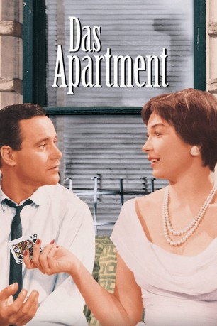
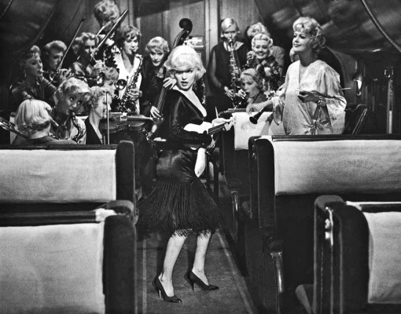
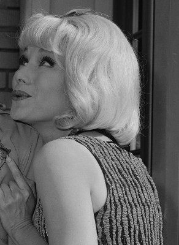
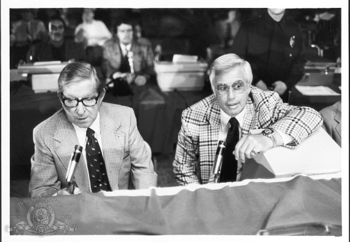

#1232 Das Appartement
Alternativ: The Apartment
Auszeichnungen: 5 Oscars gewonnen für 5 Oscars nominiert 3 GoldenGlobes gewonnen 3 BAFTA-Awards gewonnen
 
 IMDB-Wertung: 8.3 / 10
IMDB-Wertung: 8.3 / 10  IMDB-TOP-Platzierung: 108
IMDB-TOP-Platzierung: 108  Metascore: 0
Metascore: 0 
Der arme Kerl aus 'Das Appartement' heißt C.C. (Bud) Baxter (gespielt von Jack Lemmon) und arbeitet bei einer New Yorker Versicherungsgesellschaft. Er ist der nette Typ von nebenan, der sich aber rumschubsen lässt und der aus Verzweiflung bereits versuchte, sich zu erschießen. Sein Nachbar hält ihn derweil für den größten Schürzenjäger, weil in seiner Wohnung immer Frauenbesuch ansteht. Nur ist das eben nie sein eigener. Zu allem Überfluss ist Baxter auch noch heimlich in die Fahrstuhlführerin Fran Kubelik (Shirley MacLaine) verliebt, die wiederum den gemeinsamen Chef Mr. Sheldrake (Fred MacMurray) liebt. Natürlich muss diese Liebe eine Affäre bleiben, denn Sheldrake ist verheiratet und hat nicht die Größe, seine Frau zu verlassen. Es kommt also, wie es kommen muss: Fran und Mr. Sheldrake treffen sich in Baxters Appartement, doch am Ende lässt Sheldrake sie wieder spüren, dass ihre Beziehung keine Zukunft hat.
Jahr: 1960
Dauer: 125 Minuten
FSK: 16
Land: USA Studio: United ArtistsTonspuren: DTS - ,
Untertitel: Englisch,
Auflösung: 1080p (1920x824) Größe: 9123 MB
Genre: Komödie, Drama, Liebe
Regisseur:  Billy Wilder
Billy Wilder
Drehbuch: Billy Wilder, I.A.L. Diamond
Soundtrack: Adolph Deutsch
Darsteller:
 Jack Lemmon als C.C. Baxter
Jack Lemmon als C.C. Baxter Shirley MacLaine als Fran Kubelik
Shirley MacLaine als Fran Kubelik Fred MacMurray als Jeff D. Sheldrake
Fred MacMurray als Jeff D. Sheldrake Ray Walston als Joe Dobisch
Ray Walston als Joe Dobisch Jack Kruschen als Dr. Dreyfuss
Jack Kruschen als Dr. Dreyfuss David Lewis als Al Kirkeby
David Lewis als Al Kirkeby-  Joan Shawlee als Sylvia
- Naomi Stevens als Mrs. Mildred Dreyfuss
-  Joyce Jameson als The Blonde
- David White als Mr. Eichelberger
- Edie Adams als Miss Olsen
- Dorothy Abbott als Office Worker , uncredited
- David Macklin als Messenger , uncredited
 Hal Smith als Man in Santa Claus Suit , uncredited
Hal Smith als Man in Santa Claus Suit , uncredited- Hope Holiday als Mrs. Margie MacDougall
- Johnny Seven als Karl Matuschka
- Willard Waterman als Mr. Vanderhoff
-  Bill Baldwin als TV Movie Host , uncredited
- Benny Burt als Charlie - Bartender , uncredited
- Lynn Cartwright als Elevator Supervisor with Clicker , uncredited
- Fortune Cookie als Chinese Waiter , uncredited
- Mason Curry als Bit Part , uncredited
- Frances Weintraub Lax als Mrs. Lieberman , uncredited
- Ralph Moratz als Office Worker , uncredited
- Joe Palma als Office Maintenance Man , uncredited
- Edith Simmons als Sheldrake's Wife , uncredited
Datei: X:\1960\Appartement, Das (1960, FSK16, 1920x824).mkv seit 11.06.2015
Festplatte: HD 1900-1970
 Es gibt insgesamt 21 Filme in der Gruppe '1960'
Es gibt insgesamt 21 Filme in der Gruppe '1960'